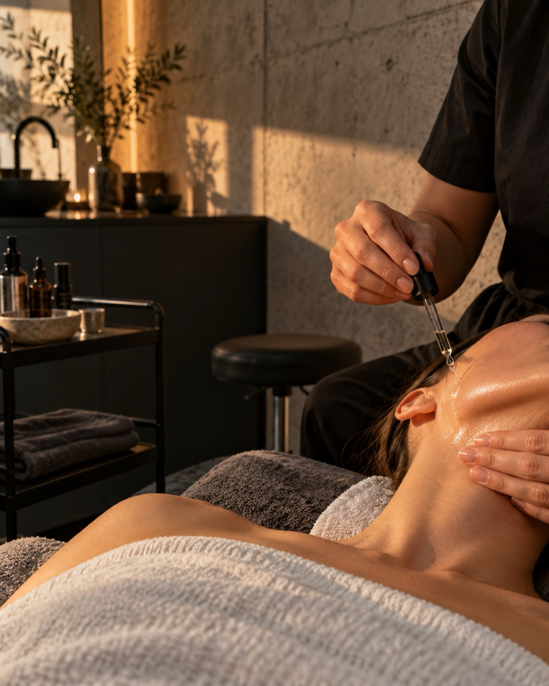

Zeit nehmen
Kein Taktgeber im Hintergrund. Dein Termin gehört dir.
Aqua Facial, Microneedling, Lashes und Brows in Wuppertal-Barmen. Gründlich, und mit Zeit für deine Fragen.

Leistungen
Tipp auf eine Zeile, dann siehst du Ziel und Nachpflege. Wie lange es dauert, sagen wir dir vorab.
Tiefenreinigung mit Wasser, einer Peeling-Komponente und Pflegewirkstoffen. Danach ist die Haut sauber, hat mehr Feuchtigkeit und wirkt frischer.

Feine Nadeln setzen kleine Reize in der Haut. Die Haut erneuert sich daraufhin selbst. Gefragt bei unebenem Hautbild und ersten feinen Linien.
Peelings lösen abgestorbene Hautschüppchen. Das Hautbild kann dadurch klarer und ebenmäßiger wirken. Welches Peeling passt, klären wir nach dem Hautblick.
Ein mechanisches Peeling: Die oberste Hautschicht wird sanft abgetragen. Danach fühlt sich die Haut glatter an, und Pflege zieht besser ein.
Ein Semi-Permanent-Teint-Effekt. Pigmente kommen oberflächlich in die Haut und gleichen den Teint aus, natürlich und mit leichtem Glow.
Reinigung, Pflege und Massage, so zusammengestellt, wie deine Haut es heute braucht. Bei empfindlicher Haut gehen wir besonders behutsam vor.
Die eigenen Wimpern werden nach oben geschwungen und getönt. Der Blick wirkt offener, Wimpernzange und Tusche brauchst du nicht.

Die Brauenhaare werden in Form gebracht und fixiert. Die Brauen wirken dadurch dichter und gepflegter. Auf Wunsch färben wir sie.
Ein kleiner Kristall oder Schmuckstein, schmerzfrei auf den Zahn geklebt. Du kannst ihn jederzeit wieder entfernen lassen.
Warum wir
Kein Taktgeber im Hintergrund. Dein Termin gehört dir.
Wir schauen genau hin, bevor wir etwas empfehlen.

Wenn etwas nicht zu dir passt, sagen wir es.
Du gehst mit klaren Tipps nach Hause.
Über das Studio
Beauty‘M Skin & More ist ein persönliches Kosmetikstudio in Wuppertal-Barmen. Die Inhaberin nimmt sich Zeit und erklärt jeden Schritt. Wenn dir etwas unangenehm ist, sagst du es einfach.
Neue Einblicke gibt es regelmäßig auf Instagram.

Ablauf
Du sagst, was du dir wünschst. Wir sehen uns deine Haut genau an.
Die Behandlung läuft in Ruhe. Du weißt immer, was gerade passiert.
Zum Schluss sagen wir dir, wie du zuhause weiterpflegst.
Galerie

Kundinnenstimmen
Man hat mich genau gefragt, was mich stört, und mir nichts aufgedrängt. Danach fühlte sich meine Haut richtig frisch an.Sabrina K.
Das Wimpernlifting sieht richtig natürlich aus. Morgens spare ich mir die Tusche.Melina T.
Es war ruhig dort, und ich habe gute Tipps für die Pflege zuhause mitgenommen.Jasmin A.
Schulungen und Kurse
Es gibt auch Schulungen. Schreib uns auf Instagram, dann nennen wir dir Themen und Termine.
FAQ
Komm am besten ungeschminkt oder mit wenig Make-up. Zum Wimpern- und Brauentermin bitte ohne Wimperntusche. Allergien oder Medikamente? Sag es uns vorab.
Das hängt von der Behandlung ab. Den Zeitrahmen nennen wir dir bei der Terminbuchung oder im Gespräch vorab.
Im Termin erklären wir dir die passende Nachpflege. Allgemein gilt: Sonnenschutz verwenden und die Haut nicht reizen.
Bitte sag so früh wie möglich ab, über Beautinda oder per Nachricht auf Instagram. So kann der Termin an jemand anderen gehen.
Kontakt und Anfahrt
Am schnellsten erreichst du uns per Instagram-Nachricht oder über die Online-Buchung.